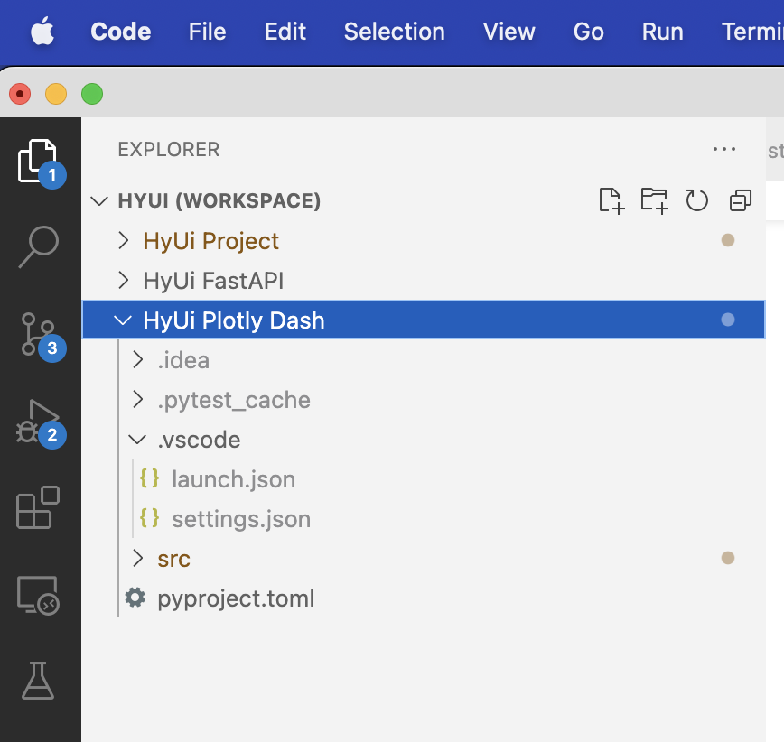

IDE set-up
Notes on setting up PyCharm for development with specific reference to working on a Mac
Set up run configurations:
- PyCharm Run/Debug Configurations
- Install the EnvFile plug-in so that the environment file can be read by your run configuration (see Stackoverflow Answer)
- Set
OBJC_DISABLE_INITIALIZE_FORK_SAFETY=YESas an environment variable in your run configuration to avoid errors on recent macos installs
Example configurations here - FastAPI - Plotly Dash
If you are using PyCharm or another IDE then ensure that the environment variables in .env are loaded. PyCharm has a plugin that can load these when unit testing with pytest or running the main application.
Notes on setting up VSCode for development
Because there are separate Python packages with separate interpreters you will need a ‘multiroot’ workspace. I found this note from StackOverFlow helpful.
One small problem with sharing a VS Code configuration is that it seems to require absolute paths from the settings.json and launch.json files. With that caveat in mind, then here are some examples below.
- Git clone the project as per usual
- Open the project in VSCode and save as a workspace
- Edit the root (HyUI)
.vscode/settings.jsonfile to exclude the folders holding the nested packages
{
"files.exclude": {
"**/.git": true,
"**/.svn": true,
"**/.hg": true,
"**/CVS": true,
"**/.DS_Store": true,
"**/Thumbs.db": true,
// exclude nested modules/packages below
"api": true,
"web": true,
"initialise": true,
"jupyter": true,
}
}- Add these folders back in via Workspaces >> Add folder to workspace … command (nested under the File menu). In my case, this means that my ‘workspace’ file, now looks like this (where I have used the
nameproperty to help me visually navigate my workspace).
{
"folders": [
{
"path": ".",
"name": "HyUi Project"
},
{
"path": "api",
"name": "HyUi FastAPI"
},
{
"path": "web",
"name": "HyUi Plotly Dash"
}
]
}And my sidebar in VS Code (with the web labelled as ‘HyUI Plotly Dash’)

- Then prepare nested
.vscode/settings.jsonand.vscode/launch.jsonfiles etc (also visible in the screenshot above). For example, for thewebmodule, you need to specify the interpreter, and a debug configuration (inlaunch.json).
Beware the absolute paths below ☹. You will need to change these unless your name is also ‘steve’.
settings.json:
{
"python.defaultInterpreterPath": "${userHome}/.pyenv/hyui-web/bin/python3",
"python.envFile": "${workspaceFolder}/.env",
"python.testing.pytestArgs": [
"src/web/"
],
"python.testing.unittestEnabled": false,
"python.testing.pytestEnabled": true
}launch.json under web:
{
"version": "0.2.0",
"configurations": [
{
"name": "HyUi: Plotly Dash",
"type": "python",
"request": "launch",
"module": "web.app",
"args": [
"--reload"
],
"jinja": true,
"justMyCode": true,
"python": "/users/steve/.pyenv/versions/hyui-web/bin/python3",
"cwd": "${workspaceFolder}/src",
"envFile": "${workspaceFolder}/../.env",
"env": {
"OBJC_DISABLE_INITIALIZE_FORK_SAFETY": "YES",
"PYTHONUNBUFFERED": "1",
}
}
]
}launch.json under api:
{
"version": "0.2.0",
"configurations": [
{
"name": "hyui-api",
"type": "python",
"request": "launch",
"module": "uvicorn",
"args": [
"api.main:app",
"--reload",
"--port",
"8092",
],
"jinja": true,
"justMyCode": true,
"python": "/users/steve/.pyenv/versions/hyui-api/bin/python3",
"cwd": "${workspaceFolder}/src",
"envFile": "${workspaceFolder}/../.env",
"env": {
"OBJC_DISABLE_INITIALIZE_FORK_SAFETY": "YES",
"PYTHONUNBUFFERED": "1",
}
}
]
}Troubleshooting
- Follow all the setup instructions and check you can get everything running locally outside vscode first!
- Check that the locations of python and your
.envfile are correct in yourlaunch.jsonandsettings.jsonfile. You may need to write absolute paths insettings.json(even iflaunch.jsonuses the{workSpaceFolder}variables appropriately). For example,"python.envFile": "~/Github/HyUi/.env").